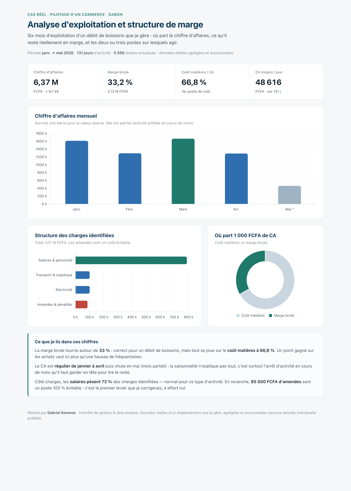
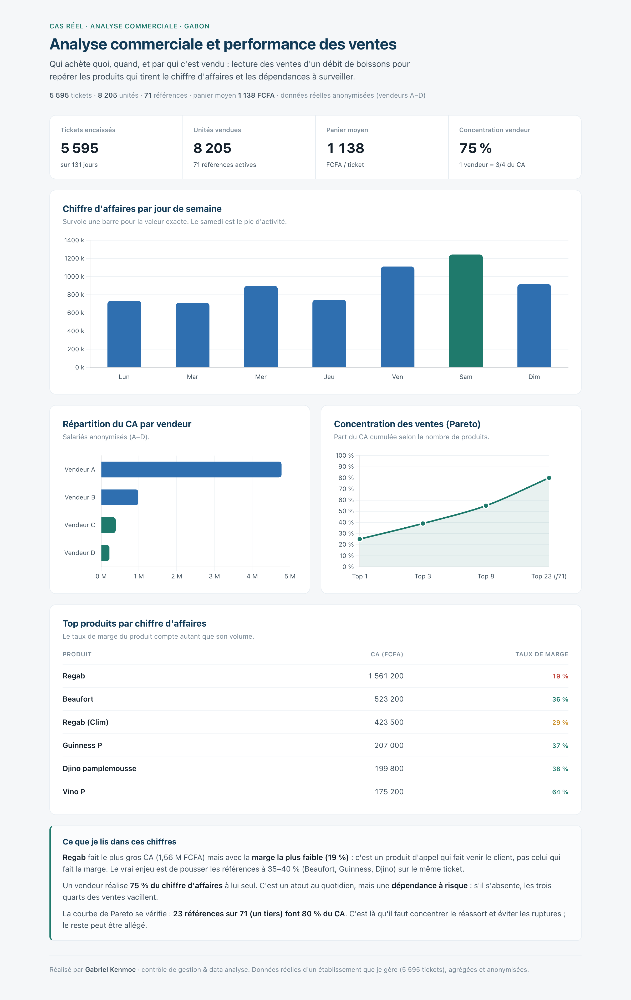
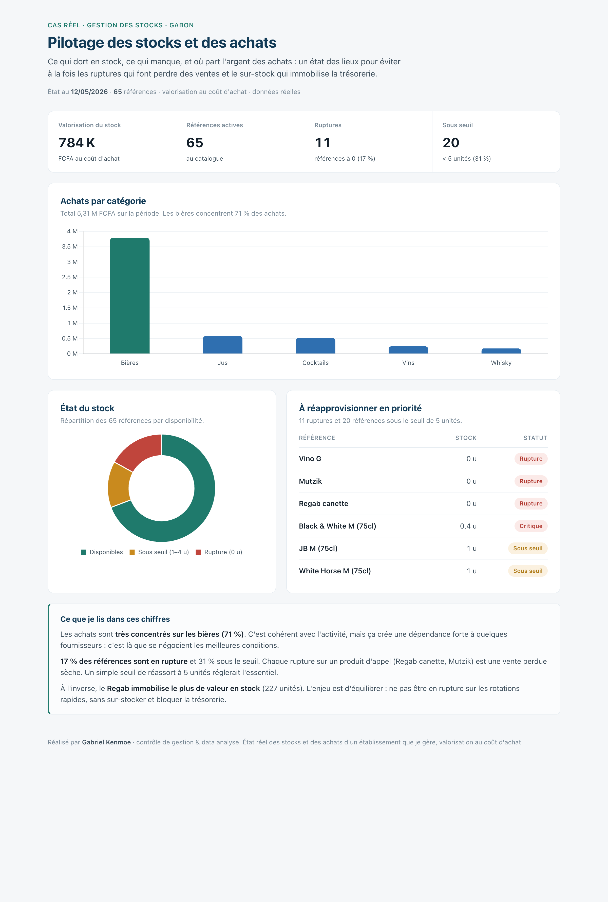
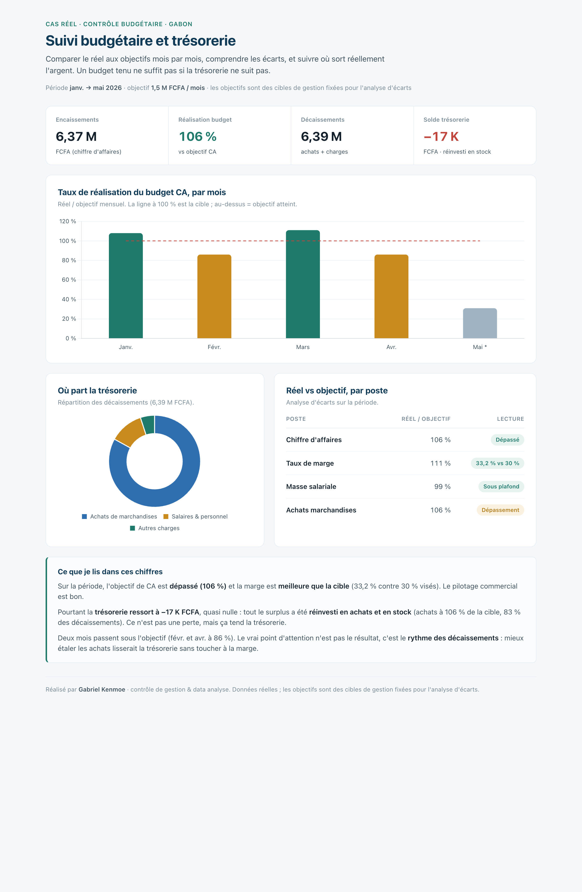
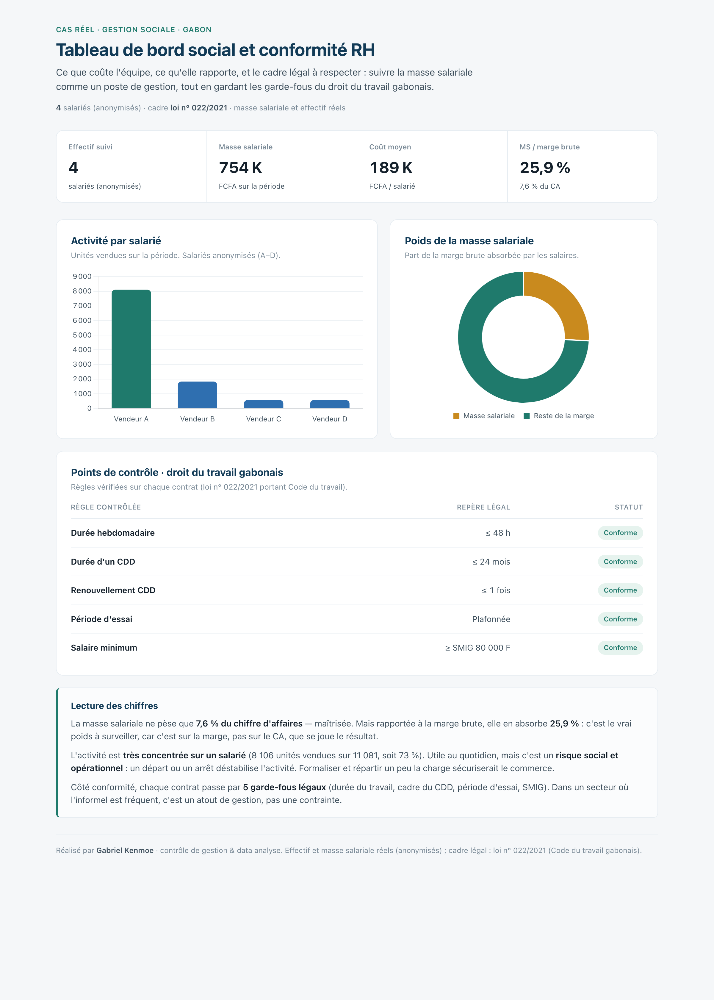

Gabriel Kenmoe · contrôleur de gestion & data analyst junior
Je gère un petit commerce (un débit de boissons) que je pilote entièrement avec mes propres tableaux de bord. Les cinq tableaux ci-dessous s'appuient sur mes chiffres réels, sur six mois d'activité. Passe la souris sur les graphiques : ils sont interactifs.
Données réelles, agrégées et anonymisées : les noms des vendeurs sont remplacés par Vendeur A à D, aucune donnée individuelle n'est publiée.

Où part le chiffre d'affaires et ce qu'il reste vraiment en marge : coût matières, charges, repères de gestion.
Ouvrir le tableau de bord →
CA par jour, part de chaque vendeur, top produits par marge et concentration des ventes (Pareto).
Ouvrir le tableau de bord →
Valorisation du stock, ruptures, seuils de réapprovisionnement et répartition des achats par catégorie.
Ouvrir le tableau de bord →
Taux de réalisation du budget mois par mois, analyse d'écarts et suivi des décaissements.
Ouvrir le tableau de bord →
Masse salariale, ratios sociaux et garde-fous du droit du travail gabonais (loi n° 022/2021).
Ouvrir le tableau de bord →